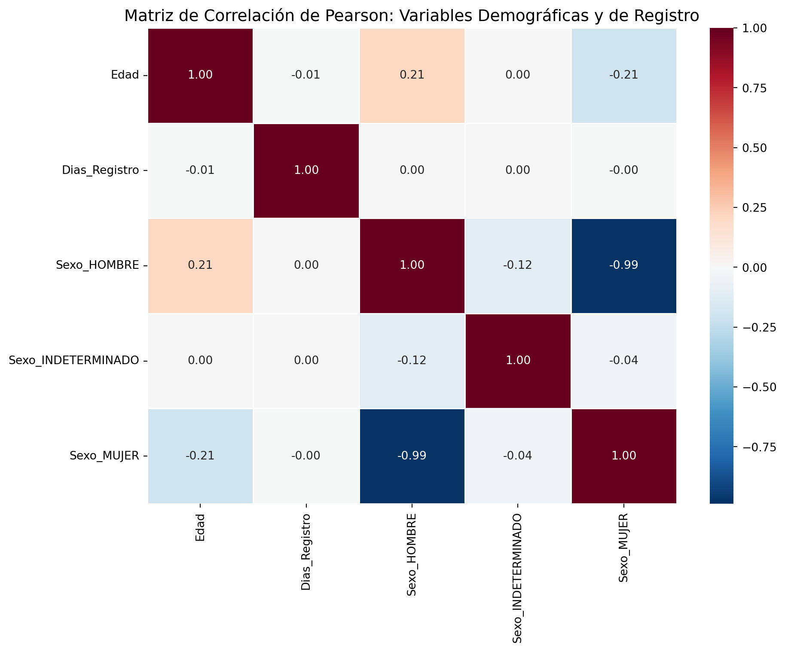
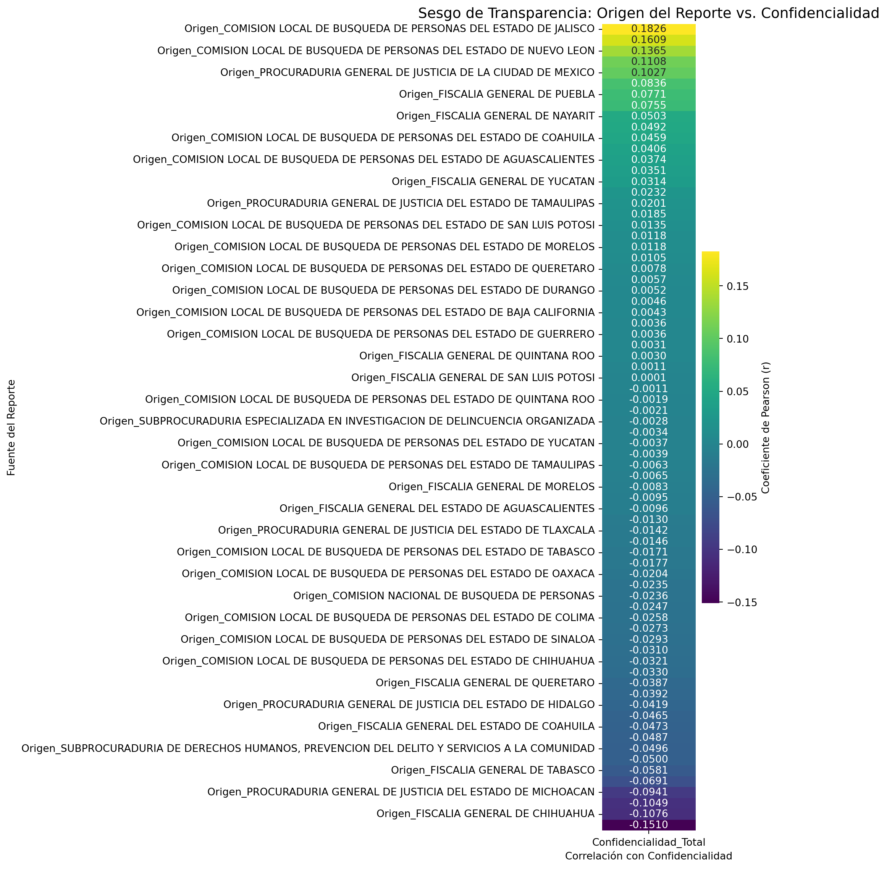

En esta sección determinamos si existe relación entre los resultados de cada uno de los registros, centrándonos en la edad de la desaparición, el sexo de la persona y el tiempo de retraso en el registro.
Code
import pandas as pdimport numpy as npimport matplotlib.pyplot as pltimport seaborn as snsdf_export_general = pd.read_csv('data/clean/data_secretariado_limpio_general.csv')df_export_temporal = pd.read_csv('data/clean/data_secretariado_limpio_temporal.csv')# Recalcular variables derivadasfecha_desaparicion_temp = pd.to_datetime(df_export_temporal['FECHA_DESAPARICION'], errors='coerce')fecha_nacimiento_temp = pd.to_datetime(df_export_temporal['FECHA_NACIMIENTO'], errors='coerce')f_registro_temp = pd.to_datetime(df_export_temporal['FECHA_REGISTRO'], errors='coerce')edades = fecha_desaparicion_temp.dt.year - fecha_nacimiento_temp.dt.yearedades_validas = edades.dropna()edades_validas = edades_validas[(edades_validas >=0) & (edades_validas <=110)]dias_diferencia = (f_registro_temp - fecha_desaparicion_temp).dt.daysdias_validos = dias_diferencia[dias_diferencia >=0].dropna()print(f"Registros con edad válida: {len(edades_validas):,}")print(f"Registros con días de retraso válidos: {len(dias_validos):,}")
Registros con edad válida: 50,705
Registros con días de retraso válidos: 72,635
4.1 Matriz de correlación de Pearson
Code
df_analisis = pd.DataFrame({'Edad': edades_validas,'Dias_Registro': dias_validos})sexo_dummies = pd.get_dummies(df_export_temporal['SEXO'], prefix='Sexo')df_analisis = pd.concat([df_analisis, sexo_dummies], axis=1)matriz_pearson = df_analisis.corr(method='pearson')print("--- Matriz de Correlación de Pearson ---")print(matriz_pearson.round(4))
plt.figure(figsize=(10, 8))sns.heatmap(matriz_pearson, annot=True, cmap='RdBu_r', center=0, fmt=".2f", linewidths=0.5)plt.title("Matriz de Correlación de Pearson: Variables Demográficas y de Registro", fontsize=14)plt.tight_layout()plt.show()

Figure 4.1: Heatmap de Correlación: Edad, Sexo y Retraso
4.1.1 Interpretación
Sexo_Hombre vs. Sexo_Mujer (\(r ≈ -0.99\)): relación técnica por exclusión mutua.
Sexo_Masculino vs. Edad: relación débil positiva (hombres desaparecidos tienden a ser de mayor edad).
Sexo_Femenino vs. Edad: relación débil negativa (mujeres desaparecidas tienden a ser más jóvenes).
Edad vs. Días de registro (\(r ≈ -0.005\)): independencia total.
Sexo vs. Días de registro (\(r ≈ 0.003\)): independencia total.
Los días de retraso no presentan asociación lineal con los factores demográficos, posiblemente por el enorme sesgo de esa variable (índice de concentración \(R = 0.9955\)).
4.2 Análisis de Confidencialidad y Origen del Reporte
Se evalúa la relación entre el origen de los reportes y la probabilidad de que contengan información confidencial.
plt.figure(figsize=(10, 12))sns.heatmap(analisis_origen, annot=True, cmap='viridis', fmt=".4f", cbar_kws={'label': 'Coeficiente de Pearson (r)'})plt.title("Sesgo de Transparencia: Origen del Reporte vs. Confidencialidad", fontsize=14)plt.ylabel("Fuente del Reporte")plt.xlabel("Correlación con Confidencialidad")plt.tight_layout()plt.show()

Figure 4.2: Heatmap de Origen del Reporte vs. Confidencialidad
4.2.1 Interpretación
Las correlaciones más fuertes positivas (Comisión Local de Jalisco, origen de Ciudad de México y Nuevo León) indican instituciones con mayor tendencia a clasificar la información. Las correlaciones negativas más fuertes (Fiscalía de Chihuahua) indican instituciones con mayor tendencia a la transparencia.
Destaca que Jalisco, el estado líder en desapariciones, también presenta una alta correlación positiva con la confidencialidad.
4.3 Resumen de correlaciones
4.3.1 Correlaciones más fuertes
Par de variables
\(r\)
Interpretación
Sexo_Hombre vs. Sexo_Mujer
≈ −0.988
Exclusión mutua lógica
Comisión Local Jalisco vs. Confidencialidad
≈ 0.183
Alta probabilidad de censura
Fiscalía Chihuahua vs. Confidencialidad
≈ −0.151
Tendencia a la transparencia
4.3.2 Correlaciones más débiles
Par de variables
\(r\)
Interpretación
Edad vs. Días de registro
≈ −0.005
Independencia total
Sexo vs. Días de registro
≈ 0.003
Independencia total
Entidades vs. Días de registro
|r| < 0.05
Sin asociación lineal
Source Code
---title: "Correlación de Variables"---En esta sección determinamos si existe relación entre los resultados de cada uno de los registros, centrándonos en la edad de la desaparición, el sexo de la persona y el tiempo de retraso en el registro.```{python}#| label: setup-correlacionimport pandas as pdimport numpy as npimport matplotlib.pyplot as pltimport seaborn as snsdf_export_general = pd.read_csv('data/clean/data_secretariado_limpio_general.csv')df_export_temporal = pd.read_csv('data/clean/data_secretariado_limpio_temporal.csv')# Recalcular variables derivadasfecha_desaparicion_temp = pd.to_datetime(df_export_temporal['FECHA_DESAPARICION'], errors='coerce')fecha_nacimiento_temp = pd.to_datetime(df_export_temporal['FECHA_NACIMIENTO'], errors='coerce')f_registro_temp = pd.to_datetime(df_export_temporal['FECHA_REGISTRO'], errors='coerce')edades = fecha_desaparicion_temp.dt.year - fecha_nacimiento_temp.dt.yearedades_validas = edades.dropna()edades_validas = edades_validas[(edades_validas >=0) & (edades_validas <=110)]dias_diferencia = (f_registro_temp - fecha_desaparicion_temp).dt.daysdias_validos = dias_diferencia[dias_diferencia >=0].dropna()print(f"Registros con edad válida: {len(edades_validas):,}")print(f"Registros con días de retraso válidos: {len(dias_validos):,}")```## Matriz de correlación de Pearson```{python}#| label: correlacion-pearsondf_analisis = pd.DataFrame({'Edad': edades_validas,'Dias_Registro': dias_validos})sexo_dummies = pd.get_dummies(df_export_temporal['SEXO'], prefix='Sexo')df_analisis = pd.concat([df_analisis, sexo_dummies], axis=1)matriz_pearson = df_analisis.corr(method='pearson')print("--- Matriz de Correlación de Pearson ---")print(matriz_pearson.round(4))``````{python}#| label: fig-heatmap-1#| fig-cap: "Heatmap de Correlación: Edad, Sexo y Retraso"plt.figure(figsize=(10, 8))sns.heatmap(matriz_pearson, annot=True, cmap='RdBu_r', center=0, fmt=".2f", linewidths=0.5)plt.title("Matriz de Correlación de Pearson: Variables Demográficas y de Registro", fontsize=14)plt.tight_layout()plt.show()```### Interpretación- **Sexo_Hombre vs. Sexo_Mujer** ($r ≈ -0.99$): relación técnica por exclusión mutua.- **Sexo_Masculino vs. Edad**: relación débil positiva (hombres desaparecidos tienden a ser de mayor edad).- **Sexo_Femenino vs. Edad**: relación débil negativa (mujeres desaparecidas tienden a ser más jóvenes).- **Edad vs. Días de registro** ($r ≈ -0.005$): independencia total.- **Sexo vs. Días de registro** ($r ≈ 0.003$): independencia total.Los días de retraso no presentan asociación lineal con los factores demográficos, posiblemente por el enorme sesgo de esa variable (índice de concentración $R = 0.9955$).## Análisis de Confidencialidad y Origen del ReporteSe evalúa la relación entre el origen de los reportes y la probabilidad de que contengan información confidencial.```{python}#| label: correlacion-confidencialidadcolumnas_interes = ['ORIGEN_REPORTE', 'confidencial_con_estado', 'confidencial_sin_estado']df_privacy = df_export_general[columnas_interes].copy()df_privacy['Confidencialidad_Total'] = ( (df_privacy['confidencial_con_estado'] ==1) | (df_privacy['confidencial_sin_estado'] ==1)).astype(int)origen_dummies = pd.get_dummies(df_privacy['ORIGEN_REPORTE'], prefix='Origen').astype(int)df_corr_final = pd.concat([df_privacy[['Confidencialidad_Total']], origen_dummies], axis=1)matriz_privacidad = df_corr_final.corr(method='pearson')analisis_origen = ( matriz_privacidad[['Confidencialidad_Total']] .drop('Confidencialidad_Total') .sort_values(by='Confidencialidad_Total', ascending=False))``````{python}#| label: fig-heatmap-2#| fig-cap: "Heatmap de Origen del Reporte vs. Confidencialidad"plt.figure(figsize=(10, 12))sns.heatmap(analisis_origen, annot=True, cmap='viridis', fmt=".4f", cbar_kws={'label': 'Coeficiente de Pearson (r)'})plt.title("Sesgo de Transparencia: Origen del Reporte vs. Confidencialidad", fontsize=14)plt.ylabel("Fuente del Reporte")plt.xlabel("Correlación con Confidencialidad")plt.tight_layout()plt.show()```### InterpretaciónLas correlaciones más fuertes positivas (Comisión Local de Jalisco, origen de Ciudad de México y Nuevo León) indican instituciones con mayor tendencia a clasificar la información. Las correlaciones negativas más fuertes (Fiscalía de Chihuahua) indican instituciones con mayor tendencia a la transparencia.Destaca que **Jalisco**, el estado líder en desapariciones, también presenta una alta correlación positiva con la confidencialidad.## Resumen de correlaciones### Correlaciones más fuertes| Par de variables | $r$ | Interpretación ||---|---|---|| Sexo_Hombre vs. Sexo_Mujer | ≈ −0.988 | Exclusión mutua lógica || Comisión Local Jalisco vs. Confidencialidad | ≈ 0.183 | Alta probabilidad de censura || Fiscalía Chihuahua vs. Confidencialidad | ≈ −0.151 | Tendencia a la transparencia |### Correlaciones más débiles| Par de variables | $r$ | Interpretación ||---|---|---|| Edad vs. Días de registro | ≈ −0.005 | Independencia total || Sexo vs. Días de registro | ≈ 0.003 | Independencia total || Entidades vs. Días de registro |\|r\| < 0.05 | Sin asociación lineal |